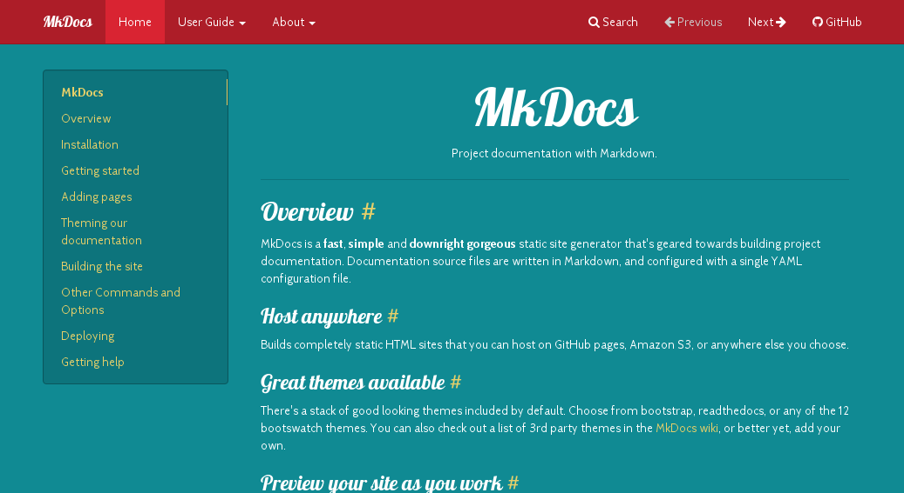
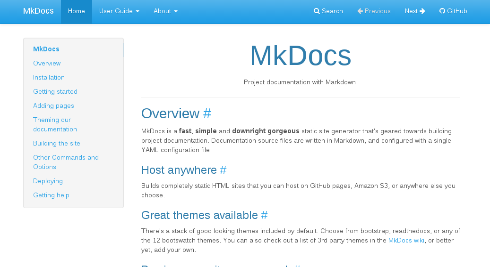
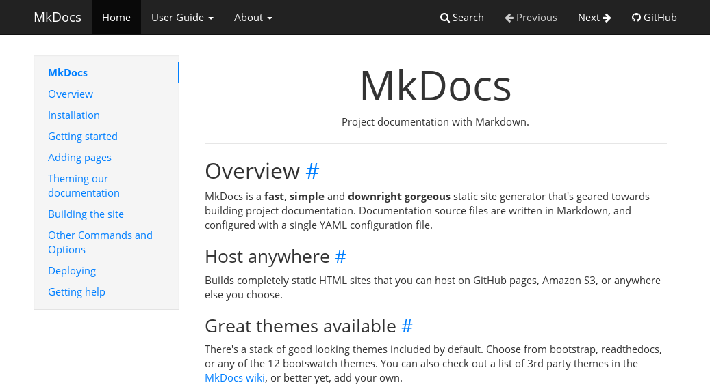
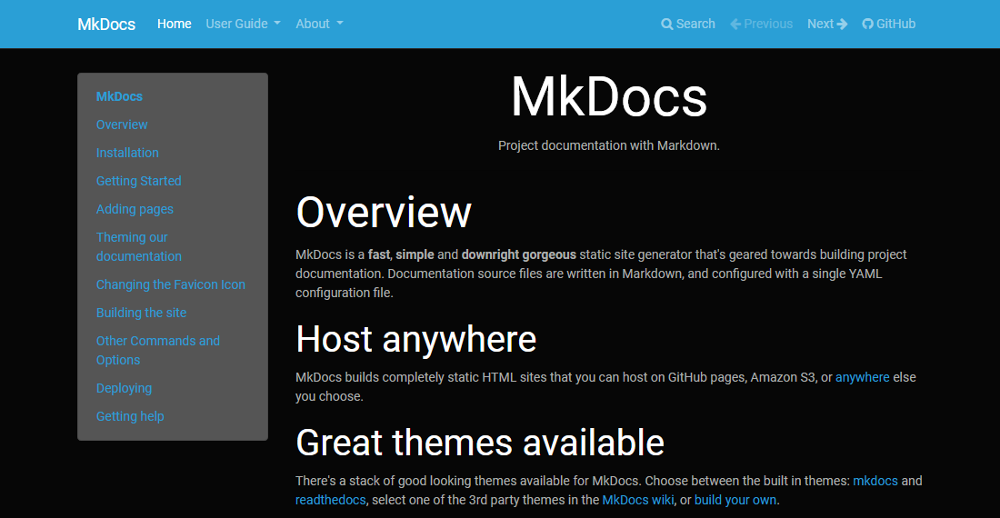
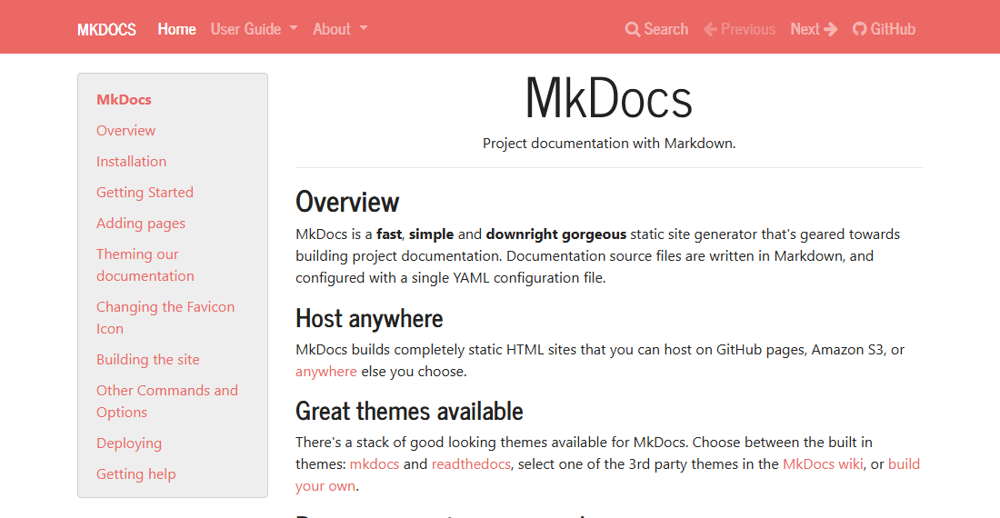
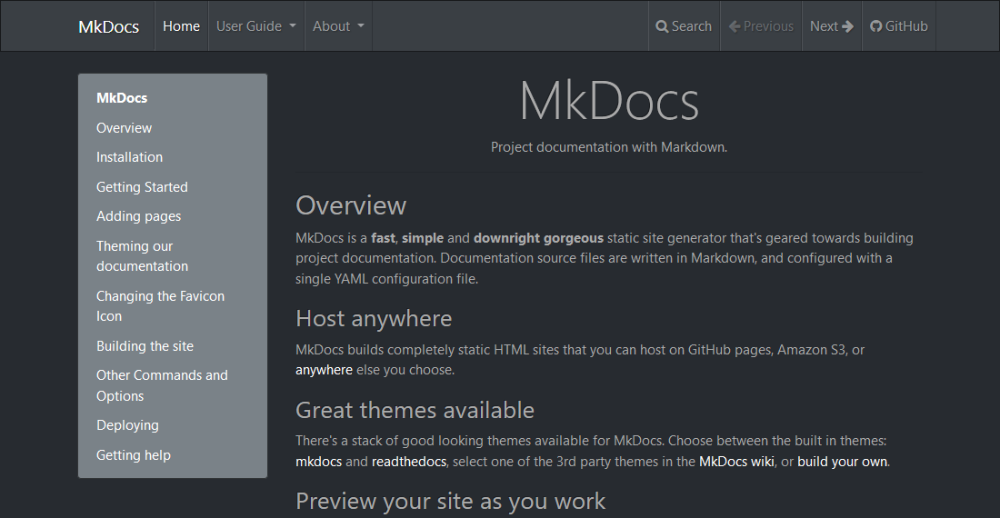
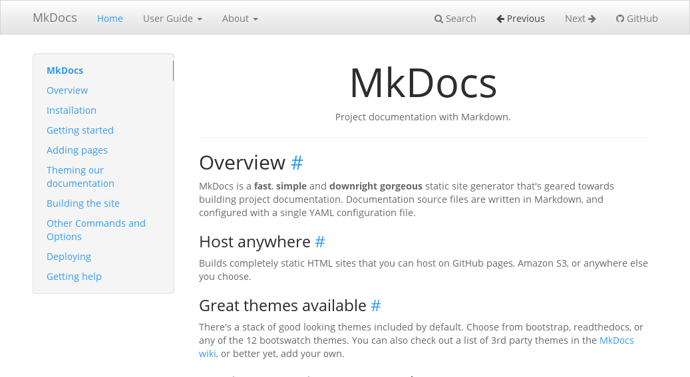
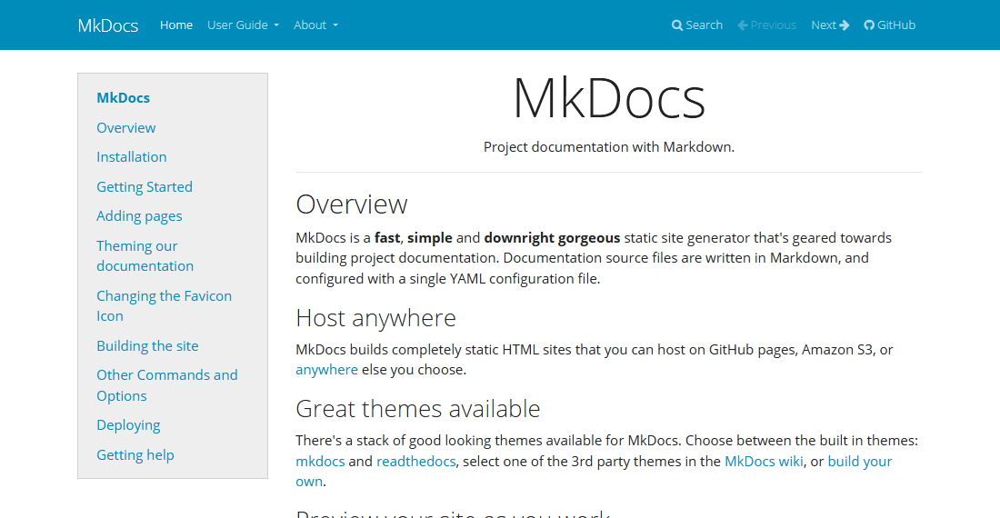

MkDocs Bootstrap Theme#
This project provides MkDocs themes for the different Bootstrap themes provided by the Bootswatch project.
Installation & Usage#
Install the collection of themes with pip, which is hopefully how you installed MkDocs.
pip install mkdocs-bootswatch
After installation is complete, edit your mkdocs.yml config file and set the theme to one of the following Bootwatch themes included. The full list is as follows:
For example:
theme: amelia
Or:
theme: yeti
In addition, you can request an inverted navigation header:
extra:
theme_inverse: true
Screenshots#
This documentation is rendered with the Bootswatch Flatly theme. Previews of the other themes can be seen below.
Amelia#

Cerulean#

Cosmo#

Cyborg#

Flatly#

Journal#

Readable#

Simplex#

Slate#

Spacelab#

United#

Yeti#
